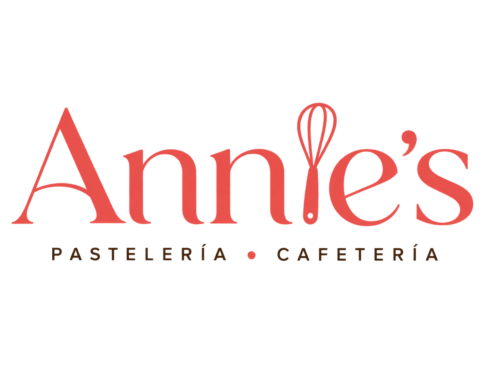

02 / Challenge
The question.
What visual language can make a bakery identity feel familiar, memorable and distinct?
Case Study / 08
A friendly bakery identity grounded in a recognizable visual personality.
 Annie's Bakery / Selected visual
Annie's Bakery / Selected visual
01 / Context
Annie's Bakery is shown through a logo and brand sheet. The work demonstrates the starting point of a brand system: a recognizable mark and a consistent visual direction.
Presented together, the logo and brand sheet establish the core visual elements and their relationship.
02 / Challenge
What visual language can make a bakery identity feel familiar, memorable and distinct?
03 / Objectives
04 / Process
The logo and brand sheet establish a compact identity language through the available typography, graphic elements and color choices.
05 / Solution
A focused brand identity presentation with its accompanying visual guidelines.
06 / Visual explorations
Original project imagery, presented without changes to the source assets.

07 / Results
A focused brand identity presentation with its accompanying visual guidelines.
Case study in progress. Add the client's goals, project timeline and verified reception when available.